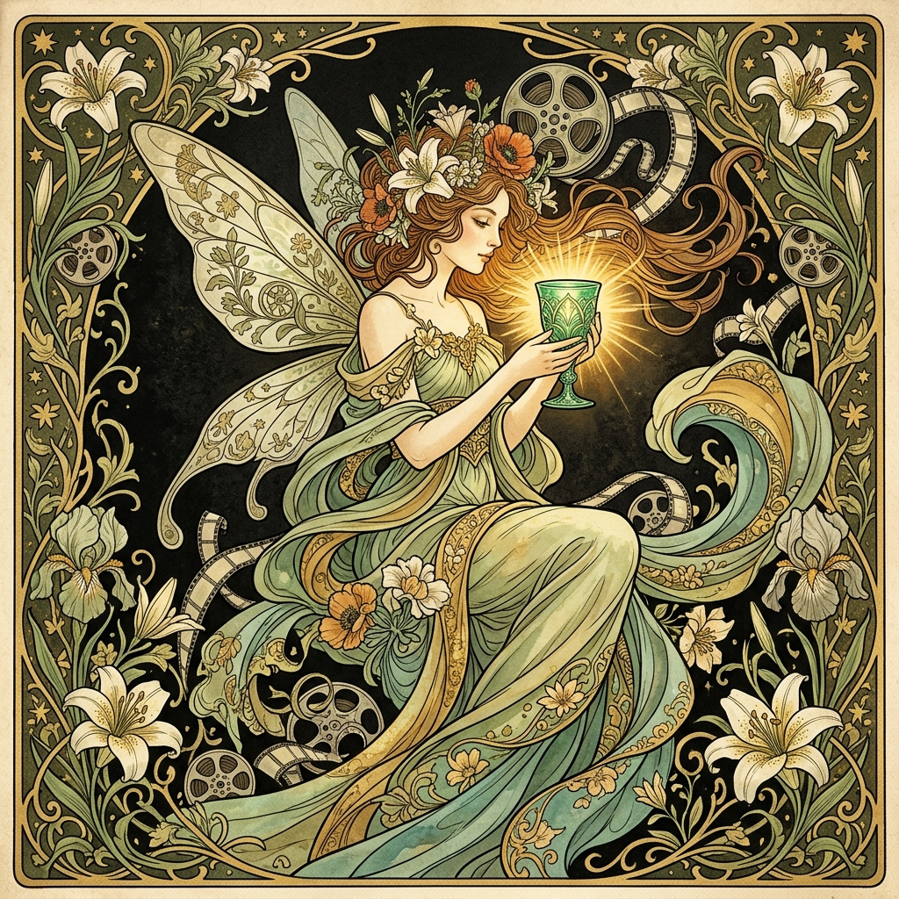
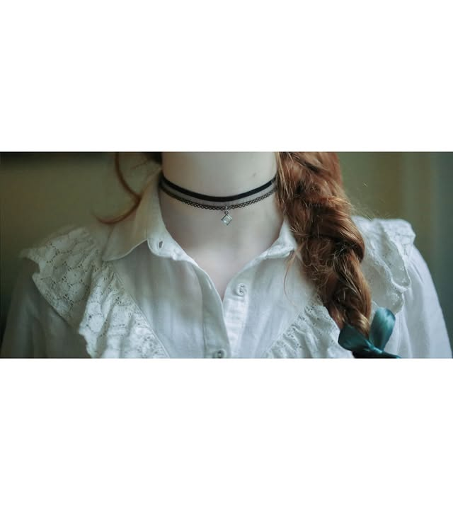
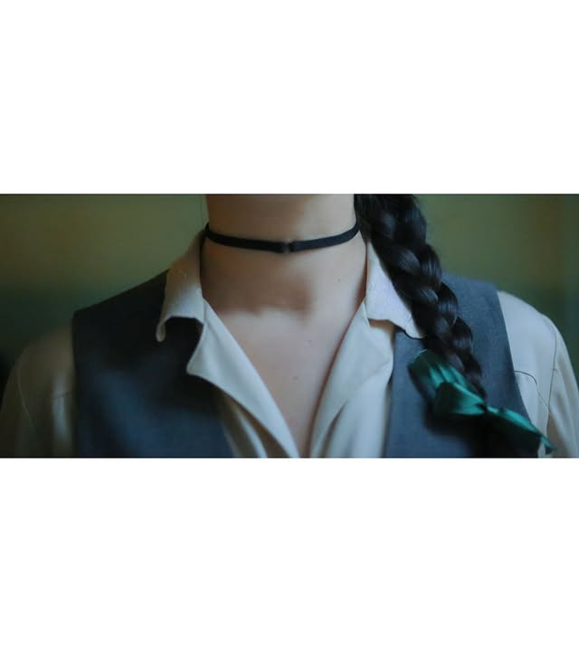
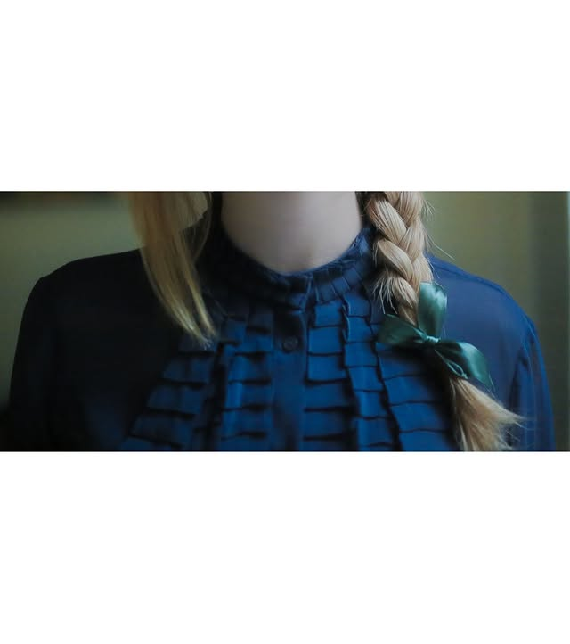

Casa di Produzione Cinematografica
La prima casa di produzione partenopea
interamente al femminile
Fata Verde nasce a Napoli dalla visione comune di tre registe: Marina Fastoso, Angela Bevilacqua e Benedetta De Biase.
Tre sguardi distinti, un'estetica condivisa. La nostra produzione si nutre di connessioni umane autentiche, lontana dai trend e dagli stereotipi, alla ricerca di narrazioni viscerali e necessarie.
Operiamo nel cuore pulsante di Napoli, città in perenne fermento creativo, con l'ambizione di contribuire alla crescita di un cinema locale vivo, libero e irriducibile.
"Un cinema senza codificazioni, senza paura."
Regista e co-fondatrice.
Autrice del progetto documentaristico Mycelium.
Regista e co-fondatrice.
Autrice di Buon Compleanno Noemi.
Regista e co-fondatrice.
Parte integrante dell'anima creativa di Fata Verde.
Il nostro catalogo spazia tra forme e linguaggi cinematografici diversi.
Storie brevi che lasciano il segno. Il formato privilegiato per la nostra voce più intima.
Lo sguardo sul reale. Storie vere raccontate con rigore poetico e profondità umana.
Comunicazione visiva con anima. Spot pubblicitari che parlano di brand con autenticità.
La musica incontra l'immagine. Videoclip come opere visive autonome.
di Angela Bevilacqua
Un cortometraggio che esplora i confini tra memoria, identità e crescita. Un'opera intima e necessaria.
Cortometraggiodi Marina Fastoso
Un documentario che indaga le reti invisibili che connettono gli esseri viventi — e gli esseri umani fra loro.
DocumentarioFrame dal nostro universo visivo.


